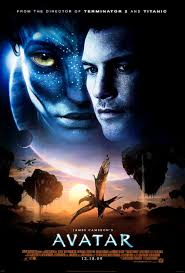

Avatar

🎬 Director: James Cameron
📅 Año: 2009
⏱️ Duración: 162 min
🎭 Género: Ciencia ficción, Aventura, Fantasía
⭐ Rating: 8.0/10
📖 Sinopsis
Jake Sully, un marine paralítico, viaja a Pandora, un exoplaneta habitado por los Na'vi. Se infiltra entre ellos a través de un avatar y descubre una civilización que valora la naturaleza sobre todo. Su misión se complica cuando se enamora de Neytiri.
🏆 Curiosidades
- Es la película más taquillera de la historia
- Los efectos especiales tardaron 4 años en desarrollarse
- James Cameron escribió el guion 15 años antes de rodarla
0 likes